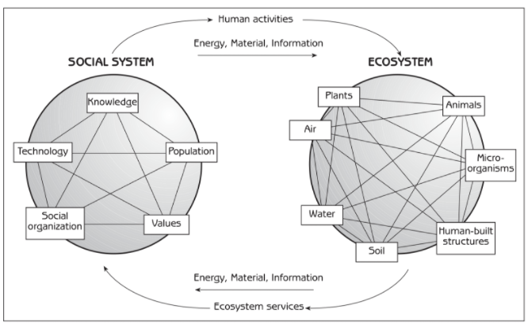

The Human Ecology Framework
The philosophy behind Los Baños 2055: Why high-tech gadgets alone could not stop climate disasters, and why our town survived by treating community well-being and natural ecosystems as one interconnected whole.
"Technology alone could not prevent mid-century climate shocks. Los Baños survived because we treated people, engineering, and nature as one interconnected system—ensuring that ecological innovation served community survival rather than private profit."
The Human Ecological Framework
Based on the foundational Human Ecology model (Marten, 2001): Human society (the Social System) and the biophysical environment (the Ecosystem) function as two complex adaptive systems linked by reciprocal flows of material, energy, information, human activities, and ecosystem services.

01. The Social System
HUMAN SPHEREThe organized totality of human population, institutions, culture, and technologies operating within Los Baños. Everything in the Social System is interconnected:
- Knowledge: Ecological literacy cultivated at UPLB, combining scientific sensor networks with indigenous Makiling stewardship.
- Technology: Self-healing bacterial bio-concrete, clean closed-loop geothermal turbines, and vertical aeroponic agriculture.
- Population: 280,000 residents living in hyper-compact vertical spires rather than suburban sprawl, releasing 78% of land back to wildlife.
- Social Organization: Weekly barangay assemblies, cooperative resource pooling, and intergenerational youth councils with municipal veto power.
- Values: Collective Bayanihan, respect for ecological limits, intergenerational justice, and prioritizing community survival over profit.
02. The Ecosystem
BIOPHYSICAL SPHEREThe living and non-living biophysical environment of the Makiling-Laguna watershed. Every component is dynamically linked:
- Plants & Flora: Mount Makiling primary rainforest canopy, native Narra corridors, and vertical building gardens.
- Animals & Fauna: Protected endemic Philippine spotted deer, native pollinators, and freshwater fish in Laguna de Bay.
- Micro-organisms: Mycorrhizal fungal networks in mountain soil and calcite-forming bacteria embedded in tower concrete.
- Air & Atmosphere: Mountain-induced convection breezes, cool forest mist, and zero combustion emissions.
- Water Systems: The restored freshwater basin of Laguna de Bay, mountain aquifers, and gravity-fed rain collection.
- Soil & Geology: Volcanic soils enriched by organic compost, stabilized mountain slopes, and zero chemical leachate.
- Human-Built Structures: Forty-story biophilic spires, elevated transit skyways, and wetland boardwalk filters.
Human Ecology in Practice: Los Baños 2055
How applying Marten's framework transformed municipal policy and community survival.
Co-Evolutionary Balance
A city is not an isolated bubble placed upon the landscape; it is a metabolic organ of the watershed. A change in the Social System (e.g. changing values toward mutual aid) directly produces positive changes in the Ecosystem (e.g. cleaner lake waters and reforested slopes).
Respecting Carrying Capacity
Rather than demanding endless growth, our Social System matches its resource consumption to the natural regenerative rate of Makiling's ecosystems. Household bio-quotas prevent the overdrawing of natural capital.
Social Organization & Equity
Ecological survival requires social justice. When resource distribution is equitable and managed cooperatively through Bayanihan, communities avoid ecological degradation driven by poverty or luxury waste.
Closed Feedback Loops
Linear systems create pollution by ignoring consequences. Los Baños closed every feedback loop: organic waste becomes agricultural soil, greywater is filtered through wetland reeds, and decisions are evaluated on 50-year generational horizons.
Two Different Futures for Cities
How our Human Ecology model in Los Baños compares to standard corporate "smart cities".
| FEATURE | CORPORATE SMART CITY (OLD WAY) | LOS BAÑOS 2055 (HUMAN ECOLOGY) |
|---|---|---|
| Water & Power | Sold for profit; the rich waste resources while the poor suffer cuts. | Shared fairly based on nature's daily limits; neighbors help each other. |
| Buildings | Concrete and glass that trap heat and need constant air conditioning. | Self-healing green towers that absorb carbon and let mountain winds blow through. |
| Nature | Pushed aside and treated as an afterthought or decoration. | The true foundation of our town; forest corridors run right through our buildings. |
| Housing | Expensive luxury apartments that push local families away. | Community-owned vertical homes with guaranteed shelter for all residents. |
| Decisions | Made by distant companies looking for quick profits. | Decided by residents and young people in weekly community meetings. |
Academic References (UPLB Course Foundations):
- Marten, G. G. (2001). Human Ecology: Basic Concepts for Sustainable Development. Earthscan Publications. (The Human Ecosystem Model: Interactions between Social System and Ecosystem).
- College of Human Ecology, UPLB. Fundamentals of Human Ecology: Living Systems and Community Well-Being. UPLB Press.
- Santos, M. (2044). Green Vertical Architecture and Community Living in Laguna. Philippine Journal of Human Ecology.